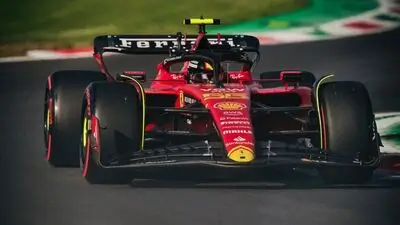

About Charles
Charles Leclerc was born on October 16, 1997 in Monaco. He is a Formula One driver who drives for the teamFerrariHis love of racing began as a child, when he began
competing in karting.
His driving style and ambition have made him one of the most promising drivers in modern Formula 1.
Career
Charles began his career in karting, winning local and international championships. In 2016, he joined the Ferrari youth program. His talent quickly caught the attention of top teams, and in 2018 he made his Formula 1 debut with Sauber, and in 2019 he became a Ferrari driver.
The path to Formula 1
Charles gained important experience in youth series such as Formula 2, where he became champion in 2017. His speed and consistency on the track helped him adapt quickly to Formula 1 and show impressive results in his early years.

Achievement
In his short but illustrious career, Leclerc has already managed to score several victories and podium finishes. He is considered one of the fastest drivers of his generation. His main achievements include:
- Formula 1 debut in 2018
- Winning two Grand Prix in the 2019 season
- Youngest driver to score pole for Ferrari
Skills and technologies
Charles possesses outstanding driving skills at the highest level. His key skills include:
- Speed and response at high speeds
- Race strategy management
- Teamwork with engineers